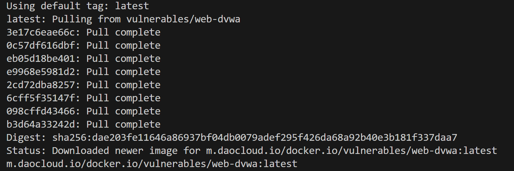
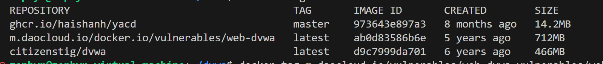

0x1前言
笔者在完成课程作业时需要构建DVWA靶场，最方便的方式必然是起一个docker，好在官方也提供了这一途径,但是笔者在docker pull时却频频报错，按照网上换源、重装等诸多办法都无济于事，于是有了下面的解决方案。
0x2问题解决过程
现在诸多主流镜像源都已经失效，根据这篇文章,笔者进行了探索。
最轻便的方式当然是使用神奇的科学上网方式来进行解决，但是笔者过于懒惰，不愿意配置clash，因此用代理的方式来pull
值得一提的是，
wget http://fishros.com/install -O fishros && bash fishros可以一键安装鱼香ROS的工具箱，这个本来是用来配置ROS的，但是有一键部署clash的方式，非常适合懒人体质。
首先记录下原始pull命令
docker pull vulnerables/web-dvwa
然后进入仓库,将命令换成
docker pull m.daocloud.io/docker.io/vulnerables/web-dvwa
然后等待下载完毕 
输入docker image ls查看镜像

然后为了方便，将镜像重命名docker tag <yourimage> <renamedimage>，例如笔者使用了docker tag m.daocloud.io/docker.io/vulnerables/web-dvwa s将新的镜像重命名为s，然后将老的镜像移除docker rmi m.daocloud.io/docker.io/vulnerables/web-dvwa。
然后运行DWVA
docker run --name dvwa -d -p 8888:80 -p 6666:3306 -e MYSQL_PASS="<yourpassword>" s
查看ifconfig,ip是192.168.153.133,访问http://192.168.153.133:8888/login.php，账号是admin,密码是password,搞定
0x3 附录，docker的常用命令
基本操作
启动docker
systemctl start docker
关闭docker
systemctl stop docker
重启docker
systemctl restart docker
docker设置随服务启动而自启动
systemctl enable docker
查看docker 运行状态
systemctl status docker
镜像操作
docker ps：列出运行中的容器docker ps -a：查看所有容器，包括未运行docker stop 容器id或name：停止容器docker kill 容器id：强制停止容器docker start 容器id或name：启动已停止的容器docker inspect 容器id：查看容器的所有信息docker container logs 容器id：查看容器日志docker top 容器id：查看容器里的进程docker exec -it 容器id /bin/bash：进入容器exit：退出容器docker rm 容器id或name：删除已停止的容器docker rm -f 容器id：删除正在运行的容器docker exec -it 容器ID sh：进入容器
referrenceLink :
0x4 科学代理
参考知乎文章
首先查看自己的代理的port，然后
sudo vim /etc/docker/daemon.json
在daemon.json中配置
{
"proxies": {
"http-proxy": "http://127.0.0.1:7897",
"https-proxy": "http://127.0.0.1:7897",
"no-proxy": "localhost,127.0.0.0/8"
}
}
:wq保存并退出
然后
sudo vim ~/.docker/config.json
如果没有这个文件就创建一个
然后填入
{
"auths": {
"registry.cn-hongkong.aliyuncs.com": {
"auth": "xxxxxx="
}
},
"proxies": {
"default": {
"httpProxy": "http://127.0.0.1:7897",
"httpsProxy": "http://127.0.0.1:7897",
"noProxy": "127.0.0.0/8"
}
}
}
笔者是在本地运行的，因此删去auths字段。
最后sudo systemctl restart docker重启服务
注：您需要根据自己的代理端口来修改